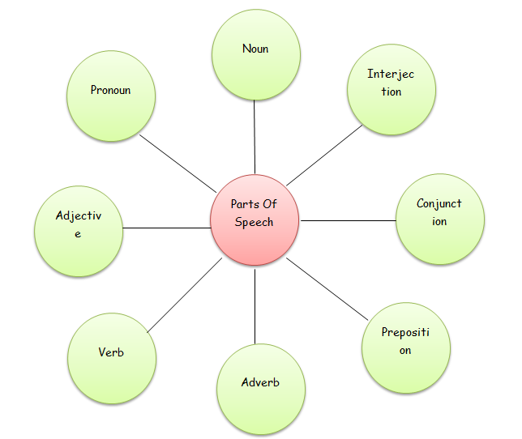

Grade 6 - Parts of speech
Welcome!
Before we dive in you should understand what parts of speech are in Grammar!
The Parts Of Speech
In a sentence, words can be considered as the smallest components that have unique meanings. We can categorize words into several types or parts of speech based on their use and functions.
An individual word can function as more than one part of speech when used in different circumstances. Therefore, understanding parts of speech is essential for determining the correct meaning of a word.
There are eight parts of speech in the English language: noun, pronoun, verb, adjective, adverb, preposition, conjunction, and interjection.
1. The Noun
This part of a speech refers to words that are used to name persons, places, things, events or ideas. All nouns are naming words.
Example: Ravi, woman, boy (person); elephant, rabbit, tiger (animal); parrot, crow, sparrow (bird); Delhi, Mumbai, India (place);
computer, mobile, pencil (thing); honesty, courage (idea), etc. Whatever we can see, feel or think and have names are considered nouns.
Sample Sentences:
1. Benji lives in Lagos.
2. Derrick uses an ink pen for jotting notes.
2. The Pronoun
This part of a speech refers to a word that replaces a noun. They eliminate the need for repetition.
A pronoun is usually substituted for a specific noun, which is called its antecedent.
Example: I, you, he, she, we, ours, mine, yours, his, her, him, hers, they, them, theirs, it, etc.
Sample Sentences:
1. Jia is a very determined child. She always focuses on her goal.
2. The largest share is mine.
3. The Adjective
This part of a speech refers to a word that modifies, describes or gives more information about a noun or pronoun.
Adjectives are describing words and normally come before the nouns.
Example: fast, quiet, useful, much, pretty, old, blue, smart, beautiful, big, sad, red, young, fun, crazy, three etc.
Sample Sentences:
1. The little boy had a blue umbrella.
2. The hardworking student received "A" grade.
4. The Verb
This part of a speech refers to a word that tells us what the subject does, or what happens to it,
or what state it is in, or what possesses.
Examples: am, is, was, are, were, have, has, had, do, does, did, be, am, is, are, was, were, being,
been, should, could, will, would, might, can, may, must, shall, ought (to), go, speak, run, eat, play, live, walk, like etc.
Sample Sentences:
1. They are always ready for any disaster.
2. Ria is charming.
5. The Adverb
This part of a speech refers to a word that modifies a verb, an adjective or another adverb.
Adverbs tell us how, when, where, how often and to what degree (extent) something happens or takes place. Adverbs often end in -ly.
Examples: gently, quickly, extremely, carefully, well, slowly, quietly, very, always, never, too, tomorrow, here etc.
Sample sentences:
1. He ate his pie quickly.
2. The teacher carefully corrected the exam copy.
6. The Preposition
This part of a speech refers to a word or a group of words that shows its relation with another noun or pronoun or a verb.
Therefore it can also be called as a ‘relation’ word and comes before a noun or a pronoun in a sentence.
They are used to indicate time, place, direction or relationship.
Example: in, on, into, at, by, upon, across, beside, between, of, out of, for, above, below, throughout, outside, before, near etc.
Sample Sentences:
1. Rita’s act is lying under the bed.
2. She left her purse on the table.
7. The Conjunction (Connectors or Linking Words)
This part of a speech refers to a word that joins two or more words, phrases, or clauses.
There are three kinds of conjunctions:
1.Coordinating Conjunctions: These are the words that join words, phrases, and clauses of
equal grammatical importance in the sentence. Example: and, but, or, so, nor, for, yet.
2.Correlative Conjunctions:These are the words that join equally important ideas, but they work in pairs.
Example: either...or, both...and, not only...but also, neither…nor, whether…or, either…or
3.Subordinating Conjunctions: These are the words that join words, phrases, and clauses that are not equal.
Example: because, although, while, since, after, as, as if, before, even if, even though, if,
so that, though, unless, until, when, whenever, where, wherever, whether.
Sample sentences:
1. He wants to go, but he can't.
2. She is honest and hardworking.
8. The Interjection
This part of a speech refers to a word or phrase that states strong, sudden emotions. It expresses strong feelings of joy, sadness,
surprise, appreciation, condemnation, etc. Since interjections are commonly used to convey strong emotions, they are usually
followed by an exclamation mark but in case of mild interjections we place comma after the interjection.
Example: Ouch!, Alas!, Oh!, Bravo!, Fantastic!, Gorgeous!, Wow!, Hurrah!, Pooh!, Pshaw!, Fie!, Gosh!
Sample Sentences
1. Ouch! I got hurt.
2. Hurray! Tomorrow is a holiday.
Note 1: Articles and determiners like a, an, the, some, any, etc. are also adjectives but they are studied separately due
to their importance in modifying the meaning of the word they qualify.
Note 2: Same Word – Several Parts of Speech
There are words that can be used in more than one way. This implies that a word can function as several different parts of speech.
The function of a word in a sentence decides to which part of speech it belongs.
Study the below sentences
1. She like to watch plays on T.V. (noun)
2. He plays cricket during his vacation. (verb)
3. I would like a drink. (noun)
4. They drink too much alcohol. (verb)
5. Rima bought a new sofa for her house. (noun)
6. She is planning to buy a sofa bed for her living room. (adjective)